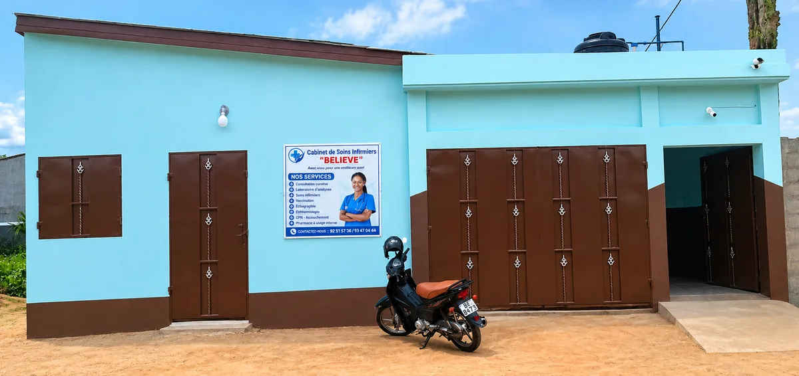
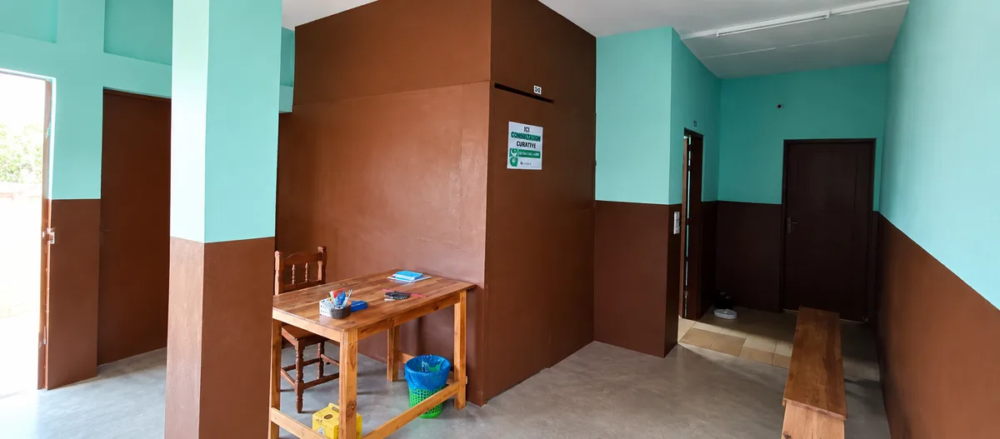

AYEBOU Jule Christh
Responsable du cabinet · IDE · Master en Sciences de la Santé
Médecine générale · Maternité · Laboratoire · Échographie
Le cabinet vous accueille à Adétikopé – Amlakopé, à côté de l'église des Assemblées de Dieu. Médecine générale, soins infirmiers, accouchement, planification familiale, échographie, laboratoire d'analyses et ophtalmologie sont proposés au même endroit.
Arrêté ministériel n° 316/2025/MSHPCSUA/CAB/SG/DGAS/DESR/DSREP

L'essentiel à savoir avant de venir.
Agréé par arrêté ministériel n° 316/2025/MSHPCSUA/CAB/SG/DGAS/DESR/DSREP.
Tous les jours de la semaine, dimanche compris, de 06h à 22h.
La nuit, appelez le +228 92 51 57 36.
Consultations, soins, accouchement, laboratoire, échographie et pharmacie réunis sous le même toit.
Vous ne savez pas quel service choisir ? Appelez-nous, nous vous orienterons.
Pharmacie à usage interne
De 22h à 05h, appelez le +228 92 51 57 36.
Nos prestations de soins, puis les prix des analyses. Pour le prix d'un soin, appelez-nous.
Prix en francs CFA (FCFA), selon la liste du 10 octobre 2026.
Aucune analyse ne correspond à cette recherche. Appelez-nous pour vérifier si nous la réalisons.
Tout est réuni au même endroit.

Des professionnels de santé à votre écoute.
Responsable du cabinet · IDE · Master en Sciences de la Santé
Ce que disent nos patients.
Témoignage de Kossi Denis à ajouter, avec son accord.
Témoignage de Gueyovo à ajouter, avec son accord.
Témoignage de Kpaoul à ajouter, avec son accord.
Conseils de santé et informations pour les patients.
Remplissez le formulaire. Il prépare votre demande, que vous envoyez ensuite par WhatsApp ou que vous copiez pour l'envoyer par SMS. Le cabinet vous confirme le créneau.
Une autre question ? Appelez le +228 92 51 57 36 ou le +228 70 72 82 12.
Le cabinet est ouvert 7j/7, de 06h à 22h. De 22h à 05h, appelez le +228 92 51 57 36 pour une urgence.
Oui. Le cabinet est ouvert 7j/7, dimanche compris, de 06h à 22h.
Remplissez le formulaire de la page, puis envoyez la demande par WhatsApp au +228 92 51 57 36. Vous pouvez aussi nous appeler au +228 92 51 57 36 ou au +228 70 72 82 12. Le rendez-vous est confirmé quand le cabinet vous répond.
À Adétikopé – Amlakopé, à côté de l'église des Assemblées de Dieu. Une carte est disponible dans la section « Où nous trouver ».
La liste complète des analyses, avec leurs prix, est dans la section « Prestations et tarifs ». Pour le prix d'un soin, appelez-nous.
Oui. Il fonctionne avec l'arrêté ministériel n° 316/2025/MSHPCSUA/CAB/SG/DGAS/DESR/DSREP.
Non. Elles servent uniquement à préparer votre message WhatsApp ou SMS et ne sont pas enregistrées par ce site. Voir la section « Confidentialité ».
Tous les jours, 06h – 22h
Urgences de 22h à 05h : appelez le +228 92 51 57 36
Horaires : 06h – 22h
Votre vie privée compte. Voici ce qu'il faut savoir sur ce site :
Une question sur vos données ? Appelez le +228 92 51 57 36.